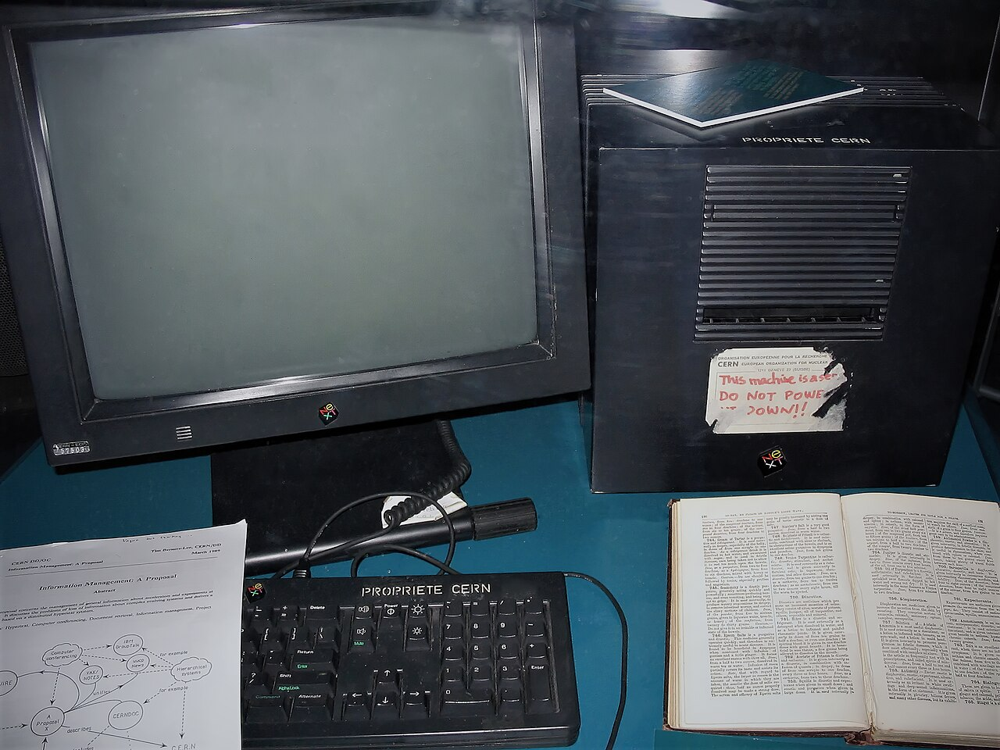

فرض کن برای دوستت پیامی میفرستی.
چند لحظه بعد، پیام به دستگاه اون میرسه.
اما پشت این تجربه ساده، مجموعهای از نرمافزارها، شبکهها، پروتکلiها و زیرساختهای فیزیکی کار میکنن.
این فرایند معمولاً اونقدر سریع انجام میشه که اصلاً بهش فکر نمیکنیم.
اینترنت چگونه شکل گرفت؟
تاریخ اینترنت حاصل پیشرفت تدریجی شبکههای کامپیوتری و پروتکلهای ارتباطی است.
ARPANET یکی از شبکههای مهم اولیه بود که در شکلگیری تاریخ اینترنت نقش داشت.
در ادامه، توسعه و استفاده از مجموعه پروتکلهای TCP/IP۱ نقش اساسی در ارتباط میان شبکههای مختلف پیدا کرد.
بعدها وب، مرورگرها و ابزارهای ارتباطی باعث شدن استفاده از اینترنت برای افراد بیشتری امکانپذیر بشه.

این تاریخ رو نباید به اختراع یک دستگاه یا یک نفر محدود کنیم؛ شبکههای امروزی حاصل همکاری و پیشرفت تعداد زیادی فناوری و گروه انسانی هستن.
وقتی یک آدرس سایت رو وارد میکنی
فرض کن آدرس یک سایت رو در مرورگر وارد میکنی.
مرورگر باید درخواست مناسب رو آماده کنه و ارتباط با سرور مقصد رو برقرار کنه.
برای پیدا کردن آدرس شبکهای مقصد، ممکنه از DNS۲ استفاده بشه.
DNS به تبدیل نام دامنه به اطلاعاتی مثل آدرس IP کمک میکنه.
سپس ارتباط شبکهای برقرار میشه و درخواست به مقصد میرسه.
سرور درخواست رو پردازش میکنه و پاسخی برمیگردونه که مرورگر میتونه ازش برای نمایش صفحه استفاده کنه.
جزئیات دقیق این فرایند به مرورگر، شبکه، کش، پروتکل و معماری سرویس بستگی داره.
بستهها و مسیریابی
در بسیاری از ارتباطات اینترنتی، دادهها به بستههایی تقسیم میشن که از طریق شبکه منتقل میشن.
مسیریابها و سایر تجهیزات شبکه به انتقال دادهها در مسیرهای مناسب کمک میکنن.
لازم نیست تمام بستهها در همه شرایط دقیقاً یک مسیر رو طی کنن.
پروتکلهای شبکه مسئولیتهای متفاوتی دارن؛ برای مثال، IP به آدرسدهی و انتقال بستهها در شبکه کمک میکنه و TCP قابلیتهایی برای انتقال قابلاعتماد داده فراهم میکنه.
همه ارتباطات اینترنتی هم الزاماً از TCP استفاده نمیکنن.
مراکز داده و رایانش ابری
بسیاری از سرویسهایی که استفاده میکنیم، روی زیرساختهایی از سرورها و مراکز داده اجرا میشن.
رایانش ابری به ما اجازه میده از منابع محاسباتی و ذخیرهسازی از راه دور استفاده کنیم، بدون اینکه تمام زیرساخت لازم رو شخصاً تهیه و نگهداری کنیم.
این مدل به توسعه سریعتر سرویسها کمک کرده، اما چالشهایی مثل امنیت، حریم خصوصی، هزینه و وابستگی به ارائهدهنده هم داره.
پاورقیها و توضیحات
- TCP/IP: IP آدرسدهی میکنه و بستهها رو از شبکهای به شبکهٔ دیگه میرسونه؛ TCP اطمینان میده بستهها کامل و بهترتیب به مقصد برسن (و اگه گم شدن دوباره فرستاده بشن). ↑
- DNS: Domain Name System؛ مثل دفترچه تلفن اینترنت: نام قابلخوندن یک سایت (مثل example.com) رو به آدرس عددی IP تبدیل میکنه تا مرورگر بدونه به کدوم کامپیوتر وصل بشه. ↑
این توضیحها را تحریریه نوشته؛ پیش از انتشار نهایی باید با منبع تطبیق داده شوند.
نسخهٔ صوتی این بخش
اگر حوصلهٔ خوندن نداری، همین بخش رو بهصورت صوتی گوش بده.
گویندهٔ خودکار مرورگر (جایگزین)
منابع پیشنهادی برای راستیآزمایی
متن این بخش ارجاع درونمتنی ندارد؛ فهرست زیر نقطهٔ شروع بررسی تحریریه است، نه تأیید ادعاهای تکتک جملهها. فهرست عمومی منابع شماره
- CERN، CERN — صفحهٔ اصلی — پیوند